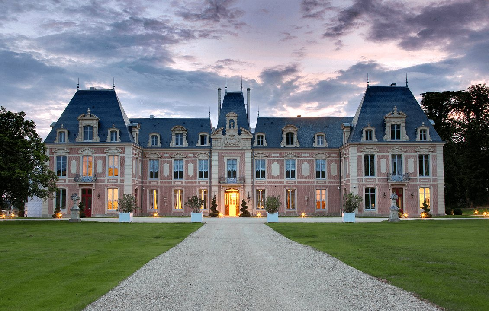
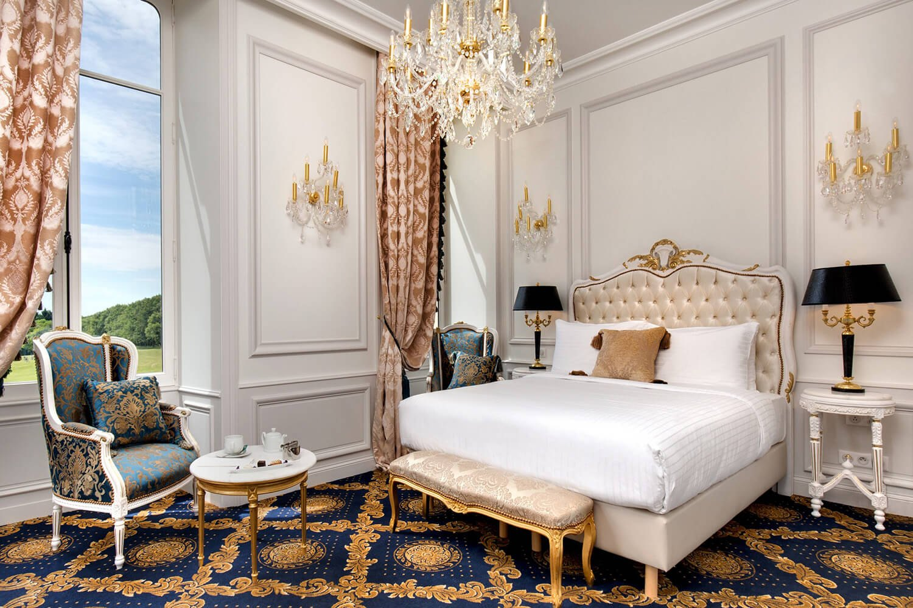
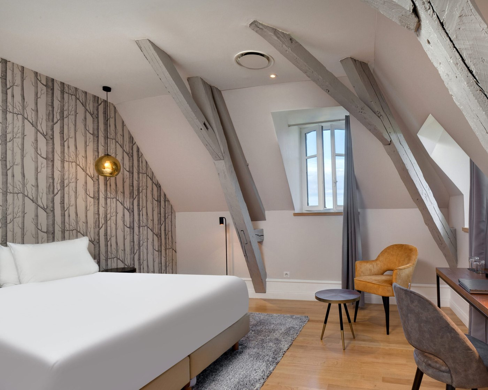
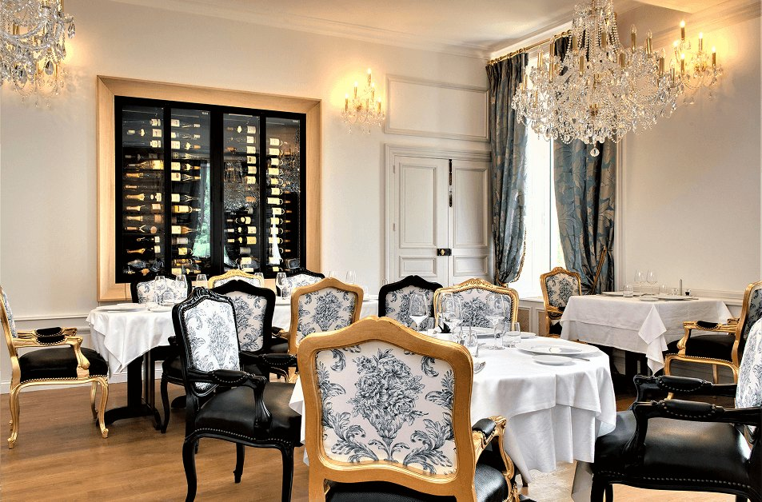
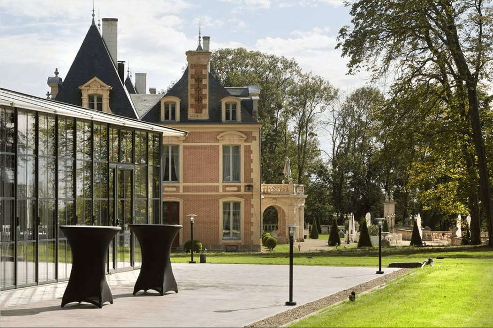

Alexandra Palace, dans les Deux-Sèvres : le seul 5 étoiles du département
Un château du XVIIe siècle racheté par un milliardaire, ravagé par un incendie en plein chantier, rouvert en 2019. Dix-sept clés dans soixante-dix hectares, et un golf 18 trous en guise de jardin.

Le château du Petit Chêne au crépuscule. Photo : Alexandra Palace, La Maison Younan.
L'essentielCe qui distingue vraiment cette maison
- Seul 5 étoiles des Deux-Sèvres. Le département n'en compte pas d'autre. Ce n'est pas un argument de communication, c'est une situation de fait.
- Dix-sept clés dans soixante-dix hectares. Le rapport est ce qui fait le lieu : un parc boisé, un golf 18 trous, une chapelle, une orangerie, et si peu de chambres qu'on ne croise personne.
- Deux styles sous le même toit. Le premier étage joue le faste châtelain, dorures et lustres en cristal ; le second, sous les mansardes, bascule dans une épure d'inspiration scandinave. On ne réserve pas la même chambre selon ce qu'on est venu chercher.
Il y a des châteaux-hôtels qui héritent d'une histoire et d'autres qui s'en inventent une. L'Alexandra Palace appartient à la seconde catégorie, et l'assume : la maison doit tout à un homme, à une décision et à un incendie. Nous l'évaluons 9,2/10 au Score LMHS, avec un Indice Deux-Sèvres de 4,7/5, notre indice thématique pour cette page.
Le pari d'un milliardaire, un incendie, et sept ans de chantier
L'histoire commence par une idée que l'on croirait inventée. Zaya Younan, milliardaire irano-américain passionné d'histoire européenne, décide d'offrir à sa femme non pas un bijou mais un château français, et un par année de mariage. En 2015, il jette son dévolu sur le château du Petit Chêne, érigé au XVIIe siècle à Mazières-en-Gâtine, un bourg discret des Deux-Sèvres à quelques kilomètres de Niort.
Le chantier a failli tout emporter : un incendie ravageur s'est déclaré en 2016, en pleine restauration. La maison a rouvert malgré tout, et l'inauguration a eu lieu en 2019. Baptisé en hommage à la fille du propriétaire, l'Alexandra Palace est devenu le premier établissement de La Maison Younan, collection qui compte depuis quatre châteaux du côté de la Loire, datant du Xe au XVIIe siècle, et un hôtel contemporain au Portugal.
À l'intérieur, le propriétaire a déployé sa vision du luxe à la française sans chercher la demi-mesure : marbres, dorures, chandeliers en cristal, mobilier de style Louis modernisé, portraits de famille en très grand format. Le décor mêle les époques et laisse passer une touche de faste oriental. On aime ou non, mais rien n'y est timide. Ce qui sauve l'ensemble, et le sauve largement, c'est que le bâti a gardé sa superbe : grandes fenêtres, hauts plafonds, moulures intactes, et des salons que la lumière traverse toute la journée.
Dix-sept chambres, deux partis pris opposés

Premier étage : les chambres « châtelaine »
Elles font entre 25 et 35 m² et poussent le registre palais jusqu'au bout : dorures, lustres en cristal, capitons, moquettes épaisses et rideaux drapés autour des grandes fenêtres. L'ambiance est franchement princière, avec cette particularité que tout est neuf : ce n'est pas un décor d'époque, c'est une reconstitution assumée. La vue sur le parc et les jardins fait le reste, à toute heure.

Second étage : l'épure sous les mansardes
Au-dessus, l'esthétique bascule complètement. La décoration est épurée, d'inspiration scandinave, et tranche volontairement avec le reste de la maison. Le palier accueille deux suites contemporaines aux salles de bains XXL. C'est plus frais, plus calme, et c'est le bon choix pour qui trouverait le premier étage trop chargé.
Toutes les clés partagent le même socle : salles de bains claires, produits d'accueil Fragonard, télévision, minibar, climatisation et chauffage réglables. Au sommet de la maison, la Suite Alexandra aligne deux grandes pièces, un hammam privé et un immense balcon dominant le parc. C'est la seule clé de l'hôtel qui offre un équipement bien-être en propre, et cela mérite d'être su avant de réserver.
Le Daniel's : Eric Jan, la Tour d'Argent et les fermes voisines

Une table de terroir dans une salle claire
Le restaurant gastronomique du château, le Daniel's, est installé dans une salle élégante et lumineuse. Il est dirigé par le chef Eric Jan, ancien de la Tour d'Argent et étoilé au Château de Curzay. Sa cuisine est de saison et se fournit chez les agriculteurs voisins.
À la carte relevée : ravioles d'escargots et légumes d'automne, quenelles de brochet à la bisque d'écrevisse, suprêmes de pigeonneau, filet de bœuf poêlé, et des desserts volontairement légers, à l'image d'une pomme caramélisée façon tatin. La sélection de vins est riche, ponctuée de flacons maison, ce qui n'a rien d'un hasard : Zaya Younan possède également quatre vignobles à Saint-Émilion, et le château leur sert de vitrine.
La maison dispose par ailleurs d'une cave voûtée, signature de La Maison Younan que l'on retrouve dans tous les châteaux de la collection. On y organise dégustations et visites œnologiques. Pour un établissement de dix-sept clés, c'est une profondeur de programme qu'on n'attend pas.
Bien-être : une cabine de soins, et pas encore de spa
Il faut le dire clairement, parce que c'est le point sur lequel un lecteur peut se tromper en lisant trop vite : l'Alexandra Palace n'a pas de spa. Pas encore. La maison dispose d'une cabine de soins où l'on réserve des massages, des rituels ayurvédiques et un head spa, ce soin japonais du cuir chevelu devenu très visible sur les réseaux. C'est une offre réelle, mais ce n'est pas un parcours bien-être, et il n'y a ni sauna ni hammam accessibles à tous les clients : le seul hammam de la maison est privatif, dans la Suite Alexandra.
En contrepartie, les extérieurs font une bonne partie du travail. Le domaine compte une piscine extérieure, une terrasse sous les colonnes, une chapelle restaurée et un golf 18 trous qui borde la propriété. Sur soixante-dix hectares de parc boisé, l'effet « coupé du monde » est le vrai soin de la maison.
Alexandra Palace en bref
| Adresse | Le Petit Chêne, 79310 Mazières-en-Gâtine, Deux-Sèvres |
| Téléphone | +33 5 49 05 44 73 |
| Catégorie | 5 étoiles, seul du département |
| Ouverture | 2019, après une restauration interrompue par un incendie en 2016 |
| Capacité | 17 chambres et suites, toutes dans le château |
| Domaine | 70 hectares, golf 18 trous, piscine extérieure, chapelle, orangerie |
| Table | Le Daniel's, chef Eric Jan, ancien de la Tour d'Argent |
| Bien-être | Cabine de soins, sans spa ; hammam privatif dans la Suite Alexandra |
| Animaux | Acceptés, supplément de 30 € par nuit |
| Fermeture | Lundi et mardi en période hivernale |
| Accès | Niort 20 min, Paris moins de 2 h, La Rochelle moins d'1 h |
| Collection | La Maison Younan, dont il est le premier établissement |
| Score LMHS | 9,2/10 · Indice Deux-Sèvres 4,7/5 |
Adresse, téléphone et coordonnées relevés le 31 août 2026 sur le site officiel de l'établissement. Aucun tarif n'est publié dans cette page, faute d'en avoir trouvé à la source.
Autour du château : ce qu'il y a vraiment à faire
La position, discrète, est meilleure qu'il n'y paraît sur une carte.
- Le Marais Poitevin, à une trentaine de minutes : la Venise Verte, ses canaux bordés de frênes têtards, que l'on parcourt en barque ou à vélo depuis Coulon, Arçais ou La Garette.
- Niort, à vingt minutes, et son donjon médiéval, pour une demi-journée urbaine.
- Échiré, à un quart d'heure, village du beurre AOP : on visite la boutique de la laiterie et l'on voit le beurre encore façonné à la baratte en bois.
- La Rochelle et la côte, à moins d'une heure.
- Le Futuroscope à cinquante minutes, Poitiers à une heure, le Puy du Fou à une heure vingt ou une heure quarante.
- Mouton Village, à une demi-heure, pour la vie pastorale traditionnelle, et les chemins forestiers de la Gâtine Poitevine, accessibles à pied depuis l'hôtel.
Pour qui cette maison est faite

Le calme d'abord, le décor ensuite
C'est une adresse pour qui vient chercher du temps et du silence, pas une scène. Les golfeurs y trouvent un parcours 18 trous à la porte, les propriétaires de chiens une des rares maisons de ce niveau à les accueillir, et les organisateurs d'événements une privatisation totale ou partielle avec plusieurs salons de réception, dont une orangerie à l'orée du parc.
Ce n'est en revanche pas la maison d'un séjour bien-être, faute de spa, ni celle d'un week-end où l'on veut sortir le soir : la campagne de la Gâtine ne s'anime pas après dîner. Et il faut vérifier ses dates : l'hôtel ferme le lundi et le mardi en période hivernale.
Questions fréquentes sur l'Alexandra Palace
L'Alexandra Palace est-il vraiment le seul 5 étoiles des Deux-Sèvres ?
Oui. Le château du Petit Chêne, restauré et inauguré en 2019, est le seul établissement classé 5 étoiles du département. Il compte 17 chambres et suites, toutes intégrées au château, dans un domaine de 70 hectares.
Y a-t-il un spa à l'Alexandra Palace ?
Non, pas de spa à ce jour. La maison dispose d'une cabine de soins où l'on réserve massages, rituels ayurvédiques et head spa japonais. Le seul hammam de l'établissement est privatif : il se trouve dans la Suite Alexandra. Une piscine extérieure complète l'offre de plein air.
Qui est le chef du restaurant Daniel's ?
Eric Jan, ancien de la Tour d'Argent et étoilé au Château de Curzay. Sa cuisine est de saison et se fournit chez les agriculteurs voisins. La carte des vins comprend des flacons maison : le propriétaire du château possède quatre vignobles à Saint-Émilion.
Quelle chambre réserver à l'Alexandra Palace ?
Cela dépend entièrement du décor que l'on cherche. Le premier étage propose les chambres « châtelaine », de 25 à 35 m², dans un registre palais assumé, dorures et lustres en cristal. Le second étage, sous les mansardes, offre une décoration épurée d'inspiration scandinave et deux suites contemporaines aux salles de bains XXL. Pour le grand jeu, c'est la Suite Alexandra, deux pièces avec hammam privé et balcon sur le parc.
Les chiens sont-ils acceptés ?
Oui, moyennant un supplément de 30 € par nuit. C'est rare pour un établissement de cette catégorie, et cela mérite d'être signalé.
Comment s'y rendre sans voiture ?
La gare la plus proche est celle de Niort, à vingt minutes en voiture, accessible en TGV depuis Paris, La Rochelle, Poitiers ou Saintes. L'hôtel se charge de commander un taxi pour la dernière partie du trajet. Paris est à moins de deux heures.
Le mot de LucasUn décor qui ne s'excuse pas
Il y a deux façons de rater un château-hôtel : le muséifier, ou le vider. L'Alexandra Palace ne fait ni l'un ni l'autre, parce qu'il a choisi une troisième voie plus risquée, celle du faste déclaré. Dorures, cristal, portraits de famille en très grand format : rien ici ne cherche la retenue, et il faut le savoir avant de réserver. Ce qui m'intéresse dans cette maison n'est pourtant pas son décor, c'est son rapport de forces. Dix-sept clés pour soixante-dix hectares, un golf en guise de jardin, une campagne qui ne cherche pas à séduire. Ce sont ces proportions-là qui font le séjour, bien plus que les lustres.
Lucas Lecoq, rédacteur en chef
Méthode et sources
Avis documentaire. Nous n'avons pas séjourné dans cet établissement. Catégorie, capacité, équipements, table, offre bien-être et conditions d'accueil relevés le 31 août 2026. Coordonnées, adresse et téléphone vérifiés sur le site officiel de l'établissement. Aucun tarif n'est publié dans cette page : la maison n'en affiche pas sur son site, et nous ne reprenons pas un prix d'appel que nous ne pouvons pas vérifier à la source. Le Score LMHS sur 10 relève de la grille LMHS Destination ; l'Indice Deux-Sèvres sur 5 est un indice thématique propre à cette page, qui mesure l'ancrage territorial. Aucun partenariat commercial, aucune affiliation. Photographies : Alexandra Palace, La Maison Younan, reproduites avec l'autorisation de l'établissement.
Pour aller plus loin
- Château la Commaraine, à Pommard : un 5 étoiles qui dort dans ses propres vignes, l'autre château-hôtel de vignoble de nos avis
- Château du Portereau, à Vertou, un autre château de l'Ouest passé au Protocole LMHS
- Les 50 meilleurs hôtels et spas de France, palmarès national 2026
- Notre méthode, les grilles de notation et les règles d'indépendance